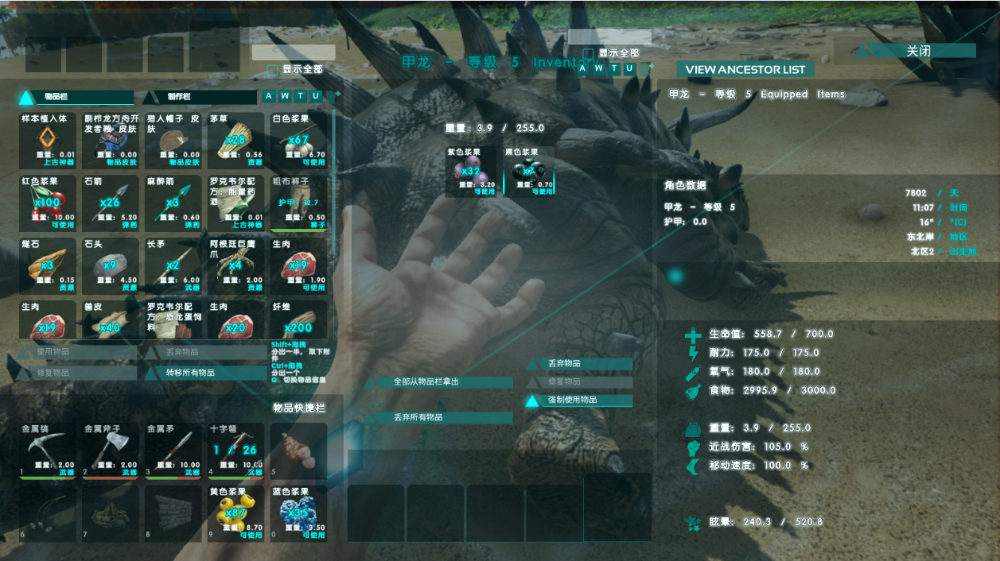

驯龙技巧
游戏中提供了超过50种不同类别的原始生物可供玩家驯服。游戏采用了一套征服-保护的驯养机制，玩家需要先击晕恐龙来弱化并驯服他们，然后照顾他们直到恢复健康。一旦完成驯服，它将成为你最忠实的伙伴，你可以给他们下达命令，而他们也会根据你驯服和训练的方式的不同做出不同的反馈。宠物会不断升级和消耗食物，还可以运送物资和装备道具。游戏还提供了独具特色的繁殖系统，玩家可以择优选择宠物去培育最佳属性，也可以简单点，直接生养一个恐龙宝宝！你可以骑着翼龙飞跃雪山之巅，带领着迅猛龙群冲过危险密布的丛林，或者骑着霸王龙四处追捕落荒而逃的敌人！快来体验这个这个充满活力的实时生态圈吧，在捕食者与被捕食者的残酷等级阶层中找到属于你的位置 。
击晕恐龙
喂食驯养

骑乘
受精卵孵化
孵养幼龙